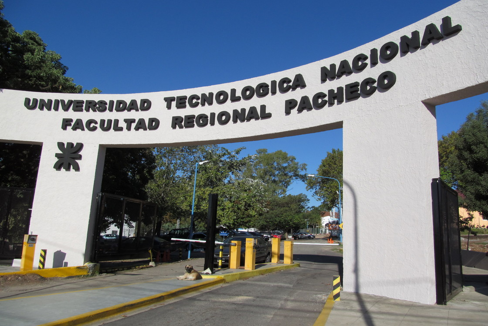
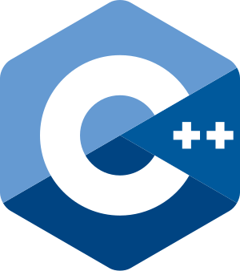

Estudios


Universidad Tecnologica Nacional
Escuela Secundaria N°46
Sobre mí
Tengo 22 años y soy graduado de la UTN desde julio de 2025. comenze a capacitarme he interesarme mas esta rama informatica desde el 2022 y arranque la universidad por marzo del 2023. Me adapto rapido a las tareas a realizar, me gusta trabajar en equipo y estoy siempre dispuesto a seguir capacitandome.
Aptitudes y herramientas
Estas son las tecnologias de las que aporto conocimiento.
